Next: Mathematical description of a Up: Boundary conditions Previous: Cyclic symmetry constraints Contents
In this section the theoretical background of the keyword *COUPLING followed by *KINEMATIC or *DISTRIBUTING is covered, and not the keyword DISTRIBUTING COUPLING.
Coupling constraints generally lead to nonlinear equations. In linear calculations (without the parameter NLGEOM on the *STEP card) these equations are linearized once and solved. In nonlinear calculations, iterations are performed in each of which the equations are linearized at the momentary solution point until convergence.
Coupling constraints apply to all nodes of a surface given by the user. In a kinematic coupling constraint by the user specified degrees of freedom in these nodes follow the rigid body motion about a reference point (also given by the user). In CalculiX the rigid body equations elaborated in section 3.5 of [24] are implemented. Since CalculiX does not have internal rotational degrees of freedom, the translational degrees of freedom of an extra node (rotational node) are used for that purpose, cf. *RIGID BODY. Therefore, in the case of kinematic coupling the following equations are set up:
This applies if no ORIENTATION was used on the *COUPLING card, i.e. the specified degrees of freedom apply to the global coordinate system. If an ORIENTATION parameter is used, the degrees of freedom apply in a local system. Then, the nodes belonging to the surface at stake (let us give them the numbers 1,2,3...) are duplicated (let us call these d1,d2,d3.....) and the following equations are set up:
The approach for distributing coupling is completely different. Here, the purpose is to redistribute forces and moments defined in a reference node across all nodes belonging to a facial surface define on a *COUPLING card. No kinematic equations coupling the degrees of freedom of the reference node to the ones in the coupling surface are generated. Rather, a system of point loads equivalent to the forces and moments in the reference node is applied in the nodes of the coupling surface.
To this end the center of gravity
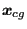
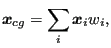 |
(212) |
where
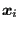 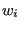
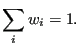 |
(213) |
The relative position
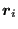
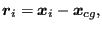 |
(214) |
and consequently:
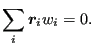 |
(215) |
The forces and moments
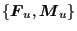 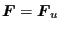 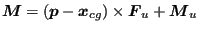 can be
transferred into an equivalent system consisting of the force
can be
transferred into an equivalent system consisting of the force
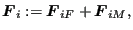 |
(216) |
where
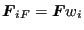 |
(217) |
and
using the definition
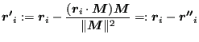 |
(219) |
is equivalent to the system
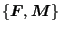 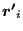 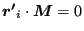 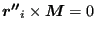 . Notice that
. Notice that
The proof is done by calculating
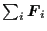 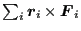 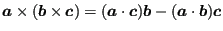
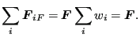 |
(220) |
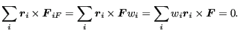 |
(221) |
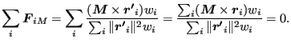 |
(222) |
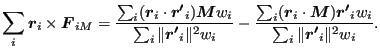 |
(223) |
The last equation deserves some further analysis. The first term on the right
hand side amounts to
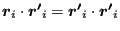 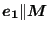 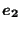 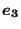 since
since
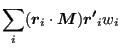 |
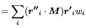 |
|
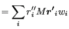 |
||
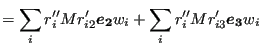 |
||
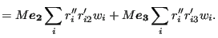 |
(224) |
These terms are zero (setting
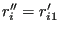 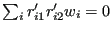 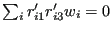 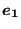
Defining
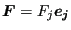 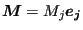
where
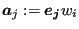 |
(226) |
and
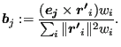 |
(227) |
Notice that the formula for the moments is the discrete equivalent of the
well-known formulas
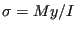 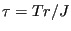
Now, an equivalent formulation to Equation (225) for the user
defined force
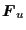 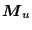
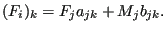 |
(228) |
Defining vectors and such that and this can be written as:
| (229) |
or
| (230) |
where . This is a linear function of and :
where
| (232) |
The coefficients and in Equation (231) are stored at the beginning of the calculation for repeated use in the steps (the forces and moments can change from step to step). Notice that the components of and have to be calculated in the local coupling surface coordinate system, whereas the result applies in the global carthesian system.
If an orientation is defined on the *COUPLING card the force and moment contributions are first transferred into the global carthesian system before applying the above procedure. Right now, only carthesian local systems are allowed for distributing coupling.